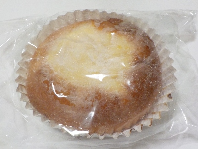
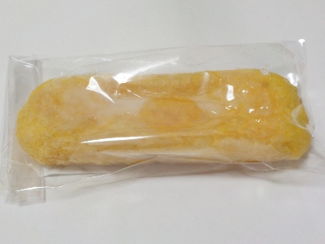
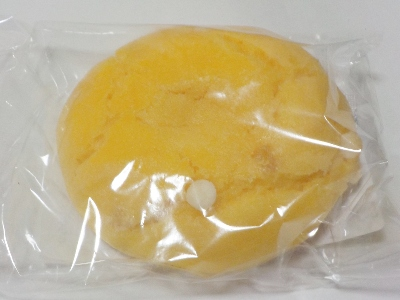

オレンジベーカリーで黄色いパンを買いました。
2024/07/06

パインクリームパンです。
カップに入ったふわふわなパンの上に、パイン味のクリームが乗っていました。
パインが入ったクリームって美味しいですね。甘さがしっかりあったので、夏で疲れた体が癒される感じがしました。

グレープフルーツとオレンジのデニッシュです。
黄色くて長方形のデニッシュパンです。
上にマーマレード、中にチーズクリームは入っていました。柑橘で爽やかですが、菓子パンらしくしっかり甘くて美味しかったです。
200円でした。

しっとりとしたスコーン オレンジ&ホワイトチョコです。
オレンジピールの味が効いてるスコーンでした。濃い味なのでおやつにいいですね。
170円でした。